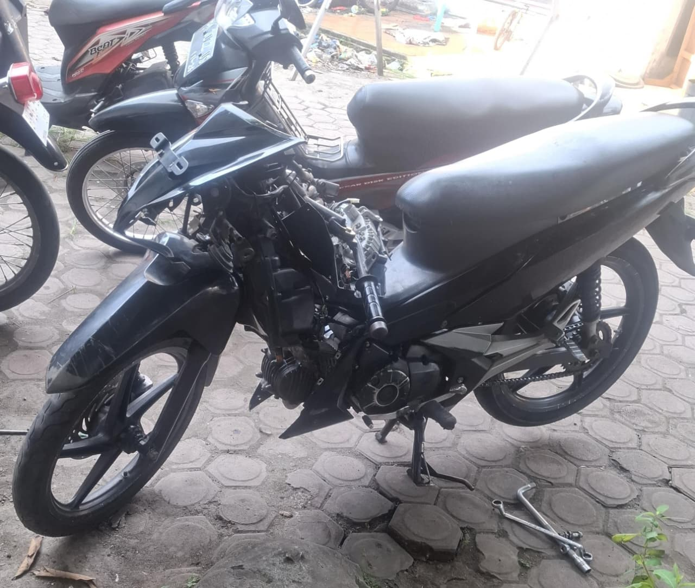
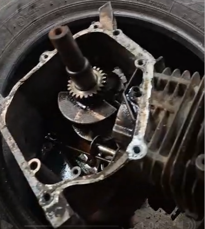
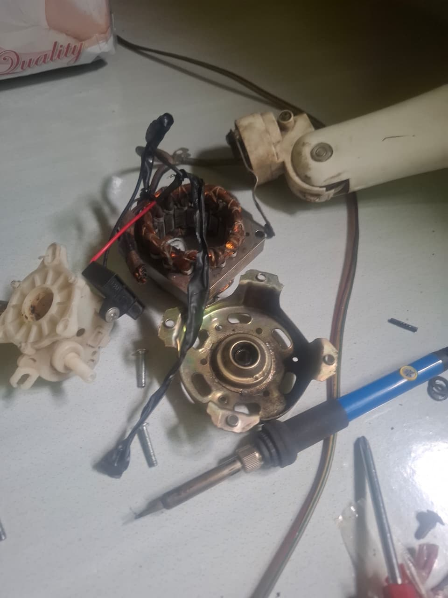
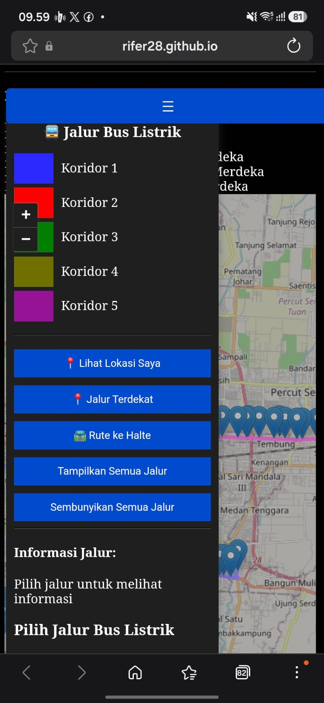
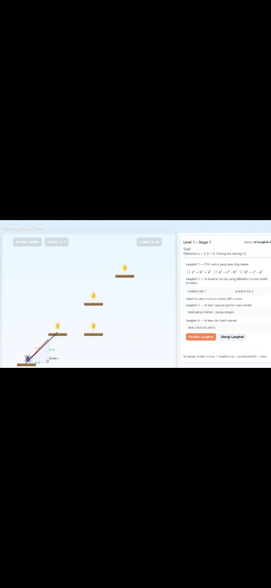
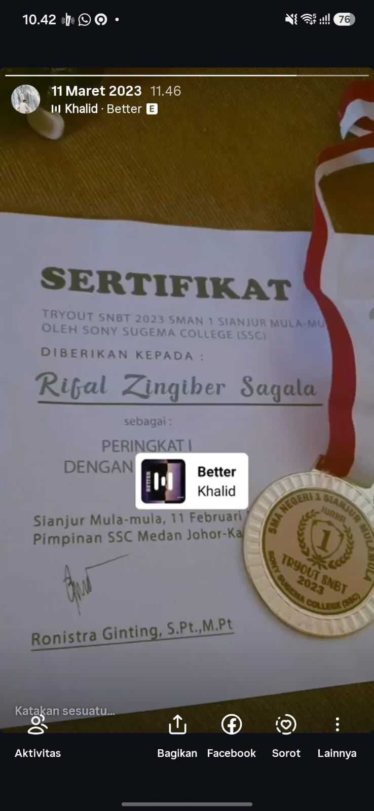

HELLO, I'M
Mahasiswa Pendidikan Matematika yang memiliki ketertarikan pada teknologi, pemrograman, kecerdasan buatan, dan media pembelajaran digital.
ABOUT ME
Saya adalah mahasiswa berusia 21 tahun dari Samosir yang mengikuti Program Studi Pendidikan Matematika UNIMED.
Saya tertarik mempelajari pengembangan website, kecerdasan buatan, machine learning, serta pembuatan media pembelajaran matematika berbasis teknologi.
Saya juga memiliki hobi di bagian otomotif saya sering melakukan pembongkaran mesin mesin kecil seperti mesin sepeda motor, mesin mesin kecil pertanian, dan juga saya sering juga membongkar bongkar barang elektronik sejak kecil.
MY EDUCATION
Perjalanan pendidikan saya dari sekolah dasar hingga pendidikan tinggi.
NPSN :10209037 ;Akreditasi : B ;Alamat : Ginolat, Ginolat, Kec. Sianjur Mula Mula, Kab. Samosir, Prov. Sumatera Utara, 22396
NPSN : 10208925 Akreditasi : B Alamat : Jalan Raya Limbong Sagala Kec. Sianjur Mulamula, Kab. Samosir
NPSN : 10208949 Akreditasi : A Alamat : Jalan Raya Limbong Sagala Kec. Sianjur Mulamula, Kab. Samosir
Fakultas Matematika dan Ilmu Pengetahuan Alam Jurusan Matematika Program Studi Pendidikan Matematika NIM: 4233111013
MY HOBBIES
Di luar kegiatan akademik, saya memiliki ketertarikan pada dunia otomotif, mesin, dan barang elektronik. Bagi saya, mempelajari cara kerja suatu benda adalah hal yang menarik.

Saya memiliki ketertarikan pada dunia otomotif, terutama kendaraan, sistem mesin, perawatan, dan memahami bagaimana setiap komponen bekerja.

Saya tertarik mempelajari berbagai jenis mesin kecil, termasuk membongkar, memahami komponen, serta mempelajari cara kerja dan perawatannya.

Saya juga tertarik dengan berbagai barang elektronik, mulai dari mempelajari komponen, cara kerja perangkat, hingga mencoba memperbaiki perangkat yang mengalami masalah.
MY PROJECTS
Beberapa project yang saya kerjakan dalam bidang teknologi, pemrograman, dan media pembelajaran matematika.

Petbulis atau Peta Bus Listrik Medan merupakan project berbasis digital yang dirancang untuk membantu pengguna mengetahui informasi mengenai rute dan lokasi bus listrik di Kota Medan secara lebih mudah.
Lihat Project →
PythaClimb merupakan media pembelajaran matematika berbentuk game interaktif yang dirancang untuk membantu siswa memahami Teorema Pythagoras melalui permainan dan penyelesaian soal.
Lihat Project →MY ACHIEVEMENT
Beberapa pencapaian yang pernah saya raih selama menempuh pendidikan.

Sony Sugema College (SSC)
Meraih peringkat pertama dalam Tryout SNBT 2023 yang diselenggarakan oleh Sony Sugema College (SSC) di SMAN 1 Sianjur Mula-Mula.
CONTACT
Jika ingin berdiskusi mengenai teknologi, pendidikan, matematika, atau project, silakan hubungi saya.